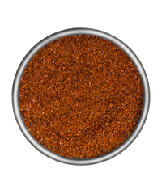

Taco Seasoning

Description
This is a medium heat, all-purpose Mexican seasoning that
is great for groundbeef or beans.
Ingredients
- 2 TBS Chili Powder
- 1 TBS Smoked Paprika
- 1 TBS Italian Seasoning
- 1 TBS All-Purpose Flour
- 2 tsp Coriander
- 1 1/2 tsp Garlic Powder
- 1 1/2 tsp Onion Powder
- 1 tsp Oregano
- 1/2 tsp Crushed Red Pepper
Steps
Combine all ingredients in a small bowl.
Mix completely with a DRY utensil.